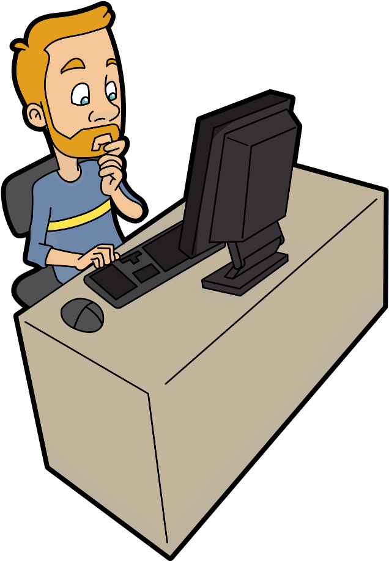
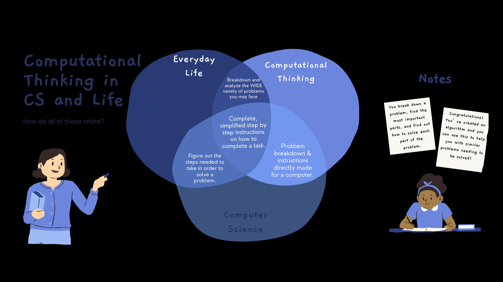

Computational Thinking is a problem solving technique where you develop
a set of instructions for a task in a way such that a computer can interpret and execute it.
This way of thinking is a big part of the world of computer science. It is also an important concept
across all fields of study. This grants you a variety of skills and competencies that can guide you through
different problems that you may encounter. There are a variety of things that you do in your life that
involve the idea of computational thinking. Even simple things like your morning hygiene routine, or even getting dressed
to go to work or school. You break down the things that you would do, and step by step complete the process. Even though these
tasks are basically second nature to you, they do come with instructions or steps that need to be done correctly. Some people
may have a different order in which they do things, but you still need to have all of the parts there to ensure you get
everything done correctly. The skills that you learn from computational thinking can be applied to all
academic areas, and even to problems that you may face in your everyday life. On top of it just being something
that can be applied practically anywhere, it would seem rather helpful to understand computational thinking, seeing
as we're living in this world with constant technological innovation.

Computational Thinking & Computer Science
Computational thinking is the flow of ideas from computer science into other fields of study. Computational Thinking is
always being used in the world of computer science. The technology that is being used always has a user telling it what to
do and how to do it. Computer scientists are seeing computational thinking from the view of a programmer. The code that is developed
clearly shows computational thinking in use. The different ways of breaking down a big problem into smaller problems shows it as well.
The problem solving, and the development of algorithms show off the use and benefit of computational thinking. Although it isn't needed to
completely understand computational thinking, beginner level computer science can be taught to people with interest in computational thinking.
Small tasks can be taught, so that even with little to no coding background, they can still be engaged and be able to grasp the skills of
computational thinking even further. Learning both would do you even more good, as you are granted even more technological skills, and mental skills.
You can be taught about finite state machines to learn computational thinking even more. Finite State Machines is a way of breaking down
problems into different states, and you move to a different state through transitions. A finite state machine is basically the a way of representing
an algorithm. Finite State machines wait for an input or an event to occur, and move on to the next state. Just like with computational thinking,
after you finish one step you move on to the next until completion.
Figure 1: Finite State Machine
Computational Thinking is Everywhere!
Computational Thinking is becoming an essential tool across the world. Every field of work or study that you can think of
uses computational thinking. It's especially needed now with all of the different things being created, and the different issues that
need to be solved as we continue to progress. As you completely solve a problem using this technique, the solution that you created is then
used as a concept that can be used for other ideas or situations that may occur. The different parts of computational thinking are applied
in varying subject areas. Even adolescents of different ages are capable of comprehending the practices of computational thinking. We will go
over these practices deeper in the second section. Everyone can find breaking down problems and visualizing problems more useful. Scientists
and engineers are able to use computational thinking to assist them in their endeavors. The abundance of analytics and other data that they have
to collect can seem overwhelming and cause some problems. However computational thinking can help them break that information down, visualize it
and find many solutions after practicing computational thinking. The algorithms or solutions found from one problem is now the reference for
similar problems that they may have. Using these past solutions as references and going on to use computational thinking on even bigger
tasks allow you to see how much is possible. Engineers and scientists are capable to not just see what exists, but they can also
figure out what's possible thanks to computer science and computational thinking.

Figure 1.1: CT, CS & Life Diagram
Let's try out a little example!
Let's think about some of the steps that you would take before going to bed at night. What would you start doing, and finish off doing before you head to sleep?
Drag and drop the blocks into the other box in the order in which you would complete the tasks. Everyone's order may be different, but it's up
to you to decide how you set your order. Once you're done, Congratulations! You've created an algorithm!
Help